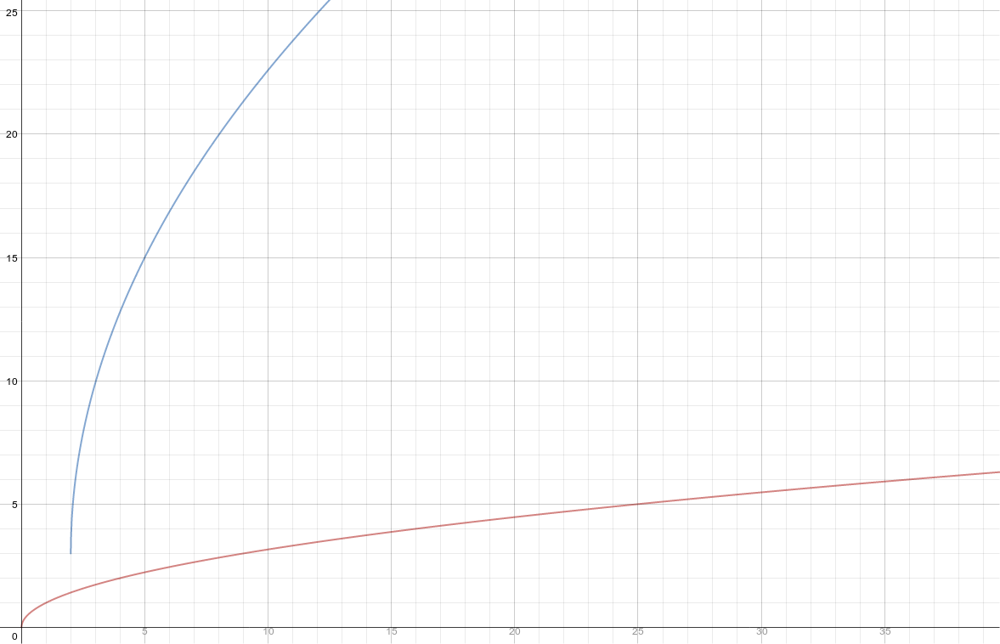

Source: A problem from my notes
Explanation:
In this artifact, I compare f(x) and g(x), and then list the graphical transformations required to get from f(x) to g(x).
I got the solution by referencing the formula: \(a*f(b(x-c))+d\)
\(g(x)\) fits the formula like so: \(3 * f(1(x-1)) + 2\)
Artifact:
Describe how the graph of \(f(x) = \sqrt{x}\) can be transformed into \(g(x) = 3 * \sqrt{(x - 1)} + 2\)
Source: From my notes
Explanation:
This artifact demonstrates graphical transformations by rewriting a function from a list of transformations.
Like the previous proficiency, I got the solution by referencing the formula: \(a*f(b(x-c))+d\)
Here are the steps I took to get from \(\sqrt{x}\) to \(-4 * \sqrt{3(x-2)} + 5\), in order.
Artifact:
Transform \(f(x) = \sqrt{x}\) into \(g(x)\)
Source: Made it up
Explanation:
This artifact demonstrates graphical transformations by transforming a graph given transformations.
Like the previous proficiencies, I got the solution by referencing the formula: \(a*f(b(x-c))+d\)
Here are the steps I took to get from \(f(x) = \sqrt{x}\) to \(g(x)\).
Appropriate Use of Technology
I used an online graphing calculator to generate the graph below.
Once I generated it:
Artifact:
Transform \(f(x) = \sqrt{x}\) into \(g(x)\) with the following transformations:
\(f(x) = \sqrt{x}\) (red)
\(g(x) = 4\sqrt{3(x-2)}+3\) (blue)
Source: I made it up.
Explanation:
This artifact demonstrates all graphical transformations by using each type of transformation.
It shows proficiency in:
Artifact:
Transform \(f(x) = |x|\) into \(g(x) = -3|4(x+4)|-7\)